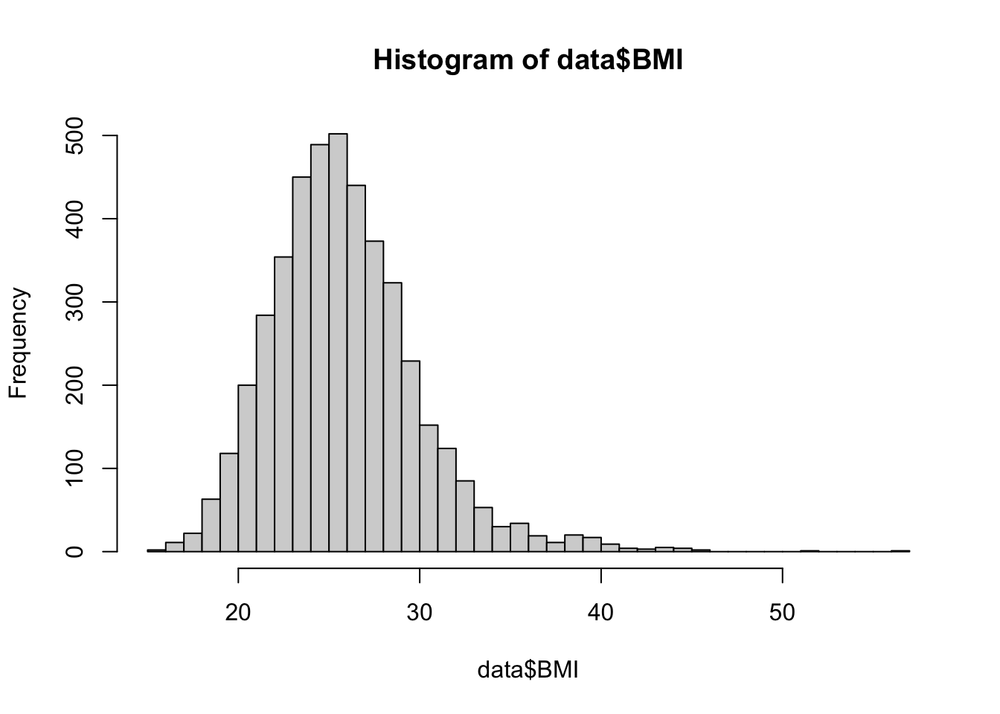
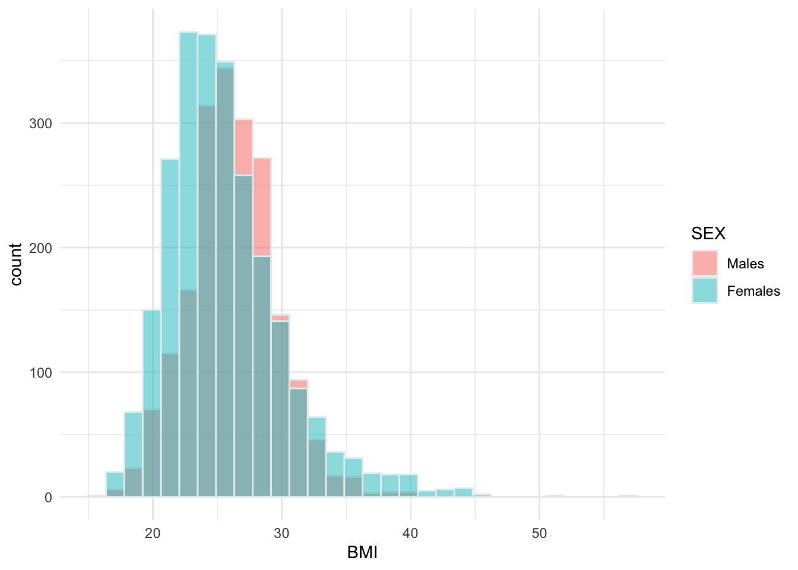

Lab 5: Hypothesis Testing
Jenny Wagner, PhD, MPH
Department of
Public Health
California State University, Sacramento
Introduction
In Lab 4 last week, we explored estimation - the first major area of statistical inference - including how to calculate confidence intervals for population parameters often of interest in public health, such as the mean, difference between two means, population proportion, and difference between two proportions. Confidence intervals provide a range of plausible values for a parameter, allowing us quantify uncertainty in our estimates.
In Lab 5, we will build upon estimation techniques for statistical inference with hypothesis testing, a formal method for making decisions about population parameters based on sample data. While confidence intervals allow us to estimate parameters within a margin of error, hypothesis testing helps us determine whether a population parameter differs significantly from a hypothesized value.
In Lab 5, you will learn how to conduct both one-sided and two-sided hypothesis tests for various population parameters, including:
- A single population mean
- The difference between two population means
- A single population proportion
- The difference between two population proportions
You will also see how hypothesis tests and confidence intervals are closely linked — where confidence intervals can provide insight into the conclusions we might draw from hypothesis tests. Lab 5 is intentionally designed to closely follow the structure of Lab 4 so that you can see the direct relationship between these techniques for statistical inference.
Objectives
After completing Lab 5, you will be able to:
- Formulate null and alternative hypotheses for different types of tests
- Conduct hypothesis tests using R functions
- Interpret p-values and make conclusions in context
- Relate confidence intervals to hypothesis testing outcomes
Tasks
In Lab 5, we will continue working with the Framingham Heart Study teaching dataset. A key assumption we will make is that the baseline sample is representative of the adult population of the city of Framingham, MA.
When you are ready to start Lab 5:
- First create a new R Markdown file using the instructions on the
Assignment Guidelines page. Save this
.Rmdfile in a folder dedicated to Lab 5 materials. - Next, save the modified dataset you created in Lab 2 - called “frmgham2_p1_impute.csv” - in the same folder as your Lab 5 R Markdown file. This is the same file we used last week in Lab 4.
- Finally, proceed to read through and carry out each of the tasks detailed below. As usual, you will begin by loading R packages, setting your working directory, and importing the dataset.
1. Install and load R packages
For Lab 5, you should not need to install any new packages. As usual,
however, we need to start by loading packages with the
library() function, as follows:
2. Set your working directory
Set your working directory using the setwd() function
(see Assignment Guidelines for detailed instructions).
setwd("YOUR FILE PATH HERE")3. Import the dataset into RStudio
Use the read.csv() function to bring in the modified
dataset you created in Lab 2. For this to work, the
“frmgham2_p1_impute.csv” file will need to be saved in the working
directory you specified in the above step. Again, this is the same data
file you started with in Lab 4.
4. Identify and modify variable types
Before we jump into hypothesis testing, we need to ensure that the variables we plan to use are in the correct format so they are treated appropriately in our analyses. This is an important step that you have practiced several times in previous Labs, and while it may feel repetitive, it is necessary for avoiding errors and ensuring accurate interpretation of our results.
As you know very well by now, variables that represent quantifiable characteristics (e.g., BMI) should be treated as numerical, while variables that represent categories should be treated as such (i.e., as categorical or factor variables). So, let’s start by checking variables types in our dataset:
## [1] "integer"## [1] "integer"## [1] "numeric"## [1] "integer"## [1] "integer"## [1] "integer"Just as we did in Labs 2 and 4, we’ll need to modify the variable
types for sex, attained education, and obesity status. While these
variables take on numerical values in our dataset, these values do not
represent actual quantities - rather, they represent categories with no
inherent quantity. Remember that we also need to specify whether a
categorical or factor variable is ordered or unordered (i.e., ordinal or
nominal). Notice in the code chunks below that, for unordered
(i.e., nominal) categorical variables like sex and obesity status, we
specify ordered = FALSE, whereas, for ordered
(i.e., ordinal) categorical variables like attained education, we
specify ordered = TRUE.
# convert sex to unordered factor variable
data$SEX <- factor(data$SEX,
levels=c("1", "2"),
ordered=FALSE)# convert attained education to ordered factor variable
data$EDUC <- factor(data$EDUC,
levels=c("1", "2", "3", "4"),
ordered = TRUE)# convert obesity status to unordered factor variable
data$OBESE <- factor(data$OBESE,
levels=c("0", "1"),
ordered=FALSE)5. Hypothesis test for a population mean
As in Lab 4, suppose you are interested in studying body mass index
(BMI) and want to start by estimating mean BMI of the adult population
of the city of Framingham. In this case, the population
parameter of interest is the population mean of BMI. First, let’s
quickly summarize our dataset using the summary() function
and also visualize the distribution of BMI with a histogram.
## RANDID SEX AGE BMI TOTCHOL
## Min. : 2448 1:1944 Min. :32.00 Min. :15.54 Min. :107.0
## 1st Qu.:2440336 2:2490 1st Qu.:42.00 1st Qu.:23.09 1st Qu.:206.0
## Median :4972848 Median :49.00 Median :25.46 Median :234.0
## Mean :4987278 Mean :49.93 Mean :25.85 Mean :236.9
## 3rd Qu.:7463577 3rd Qu.:57.00 3rd Qu.:28.06 3rd Qu.:263.0
## Max. :9999312 Max. :70.00 Max. :56.80 Max. :696.0
## EDUC OBESE
## 1:1935 0:3860
## 2:1281 1: 574
## 3: 716
## 4: 502
##
## 
From the summary of our dataset, we can see the mean BMI in the sample is 25.85. This aligns with our view of the histogram for BMI, which shows the bulk of the distribution centered around this value. Suppose you want to know whether the population of Framingham has an average BMI that is different from the national average (at the time of data collection), 25. Using our sample data, we can conduct a hypothesis test for the value of the population mean to determine - with a specified level of confidence - whether the population mean of BMI in Framingham is different from the national average.
In statistical hypothesis testing, we start with two competing hypotheses: the null hypothesis (𝐻0) and the alternative hypothesis (𝐻𝑎). These hypotheses represent different claims about a population parameter, and our goal is to use sample data to determine which is more likely to be true. The null hypothesis is the default assumption that there is no effect or difference. It represents a baseline or “status quo” scenario and assumes there is no relationship, difference, or effect. The alternative hypothesis, on the other hand, is the hypothesis you’re testing to see if there is evidence of an effect, relationship, or difference. It states the opposite of the null hypothesis and often reflects what you suspect or want to confirm using sample data.
For our scenario, the null and alternative hypotheses are as follows:
𝐻0: μ = 25
𝐻𝑎: μ \(\neq\) 25
Or, in words:
𝐻0: The mean BMI in Framingham is equal
to the national average, 25.
𝐻𝑎: The mean BMI in Framingham is different
from the national average, 25.
The phrasing of our alternative hypothesis —“different from” — is key because it does not specify a direction (higher or lower), only that the mean may not be 25. This makes it a two-sided test, because we are considering both possibilities:
- The population mean BMI in Framingham could be greater than 25.
- The population mean BMI in Framingham could be less than 25.
Recall from lecture that, after specifying the null and alternative hypotheses, our next step is to identify the appropriate reference distribution — i.e., the probability distribution that describes how our test statistic behaves under the assumption that the null hypothesis is true. When conducting a hypothesis test for the population mean, we will use either the Z or t-distribution. Just like when we constructed confidence intervals in Lab 4, the appropriate reference distribution depends on the following conditions:
- Whether the population is normally distributed;
- Whether the sample is small or large (>30); and
- Whether the population variance is known or unknown.
We can again use the flowchart below to identify the most appropriate reference distribution (Z or t) when estimating a population mean:

As in Lab 4, we will assume BMI in the population is approximately
normally distributed with an unknown variance. Following the flowchart
above, under these conditions we can estimate the population mean using
either the standard normal distribution (Z)
or the t-distribution. Most often in practice,
the t-distribution will be used (but the results will be very
similar, as the t-distribution approximates the standard normal
distribution with large samples). Let’s take a look at how we can carry
out this task in R using the t.test() function:
# one sample t-test for population mean
t.test(data$BMI, mu = 25, alternative = "two.sided", conf.level = 0.95)##
## One Sample t-test
##
## data: data$BMI
## t = 13.766, df = 4433, p-value < 2.2e-16
## alternative hypothesis: true mean is not equal to 25
## 95 percent confidence interval:
## 25.72565 25.96667
## sample estimates:
## mean of x
## 25.84616First, notice that the code we are using here for this hypothesis
test is very similar to the code we used in Lab 4 to generate a
confidence interval for the population mean BMI. In both cases, we use
the t.test() function and specify the variable of interest
using data$BMI. However, we’ve added a couple of new
arguments, as follows:
mu = 25: The hypothesized population mean BMI (from the null hypothesis).alternative = "two.sided": Indicates that we are conducting a two-sided test, since the alternative hypothesis does not specify a direction.conf.level = 0.95: Just as we did when constructing confidence intervals, we must specify a desired confidence level for our hypothesis test. The confidence level is important in hypothesis testing because it determines the threshold for statistical significance — in other words, how much uncertainty we are willing to accept when making a decision about the null hypothesis. Here, we have specified a desired confidence level of 0.95, or 95%, which means there is a 5% chance of making a Type I error. This probability is called “alpha” (α) and is referred to as the significance level of a test. In this case, since we are specifying a confidence level of 95%, this means we have a significance level, α, of 0.05.
Let’s break down the most important parts of the output from our hypothesis test:
- Alternative hypothesis: Specifies the hypothesis being tested, in this case, that the true (population) mean is not equal to 25.
- Test statistic (t): Tells us how many standard errors the sample mean is away from the hypothesized mean (25). A large t-value (in this case, 13.766) suggests that the sample mean is significantly different from 25.
- p-value: The p-value represents the probability of obtaining a test statistic as extreme as (or more extreme than) the one observed, assuming that the null hypothesis (𝐻0) is true. In other words, the p-value tells us how likely our sample results would be if there were actually no effect or difference in the population (i.e., if 𝐻0 were correct). In this case, the p-value is essentially 0 (very, very small), indicating an extremely low probability that we would observe a sample mean this far from 25 if the null hypothesis were true.
We will use the p-value to make a decision about our null hypothesis. In general, when the p-value is very small, this means we have enough evidence to reject the null hypothesis in favor of the alternative hypothesis. How small is small? To make a decision about our null hypothesis (reject or fail to reject) we will compare the p-value to α, our specified level of significance. Again, this is something we, as the researcher, will choose in advance of conducting the hypothesis test. Common choices for α are:
- 0.05 (5%) → Most common in public health and social sciences.
- 0.01 (1%) → Used when stronger evidence is needed (e.g., medical studies).
- 0.10 (10%) → Sometimes used for exploratory research.
The general rules for drawing conclusions about a hypothesis test are as follows:
- If 𝑝≤𝛼→ Reject 𝐻0.
- The data provide strong evidence against 𝐻0 , suggesting
that 𝐻𝑎 is likely true.
- Example: If 𝑝=0.02 and 𝛼=0.05, we reject 𝐻0.
- The data provide strong evidence against 𝐻0 , suggesting
that 𝐻𝑎 is likely true.
- If 𝑝>𝛼→ Fail to reject 𝐻0.
- The data do not provide enough evidence to reject 𝐻0.
This does not mean that 𝐻0 is true — just that we lack strong
enough evidence to reject it.
- Example: If 𝑝=0.12 and 𝛼=0.05, we fail to reject 𝐻0.
- The data do not provide enough evidence to reject 𝐻0.
This does not mean that 𝐻0 is true — just that we lack strong
enough evidence to reject it.
Going back to our results above, we have a p-value of < 2.2e-16 (remember, this is scientific notation for an extremely small value, close to 0). Recall that we set 𝛼=0.05 (again, this should be specified by the researcher/analyst in advance of conducting the test). Since 𝑝≤𝛼, we can reject the null hypothesis. We can state our conclusion as follows:
At a significance level of 0.05, we reject the null hypothesis (𝐻0) and conclude that there is strong statistical evidence that the true mean BMI in Framingham is different from the national average of 25.
Now, suppose we want to test whether the mean BMI in Framingham is greater than the national average of 25, rather than just different from it. This requires a one-sided hypothesis test, where we specifically test if the population mean BMI in Framingham is significantly higher than 25. In this next example, we will walk through how to set up and conduct a one-sided t-test for this scenario.
First, we can state our null and alternative hypotheses as follows:
𝐻0: μ ≤ 25
𝐻𝑎: μ > 25
Or, in words:
𝐻0: The mean BMI in Framingham is less
than or equal to the national average, 25.
𝐻𝑎: The mean BMI in Framingham is greater
than the national average, 25.
Remember, the null hypothesis (𝐻0) always represents the status quo or no effect. In this case, the status quo is that the mean BMI in Framingham is not greater than 25 — meaning it could be equal to or less than 25. The alternative hypothesis (𝐻𝑎) represents the claim we want to test. Since we are specifically interested in whether the mean BMI is greater than 25, we use a greater than (>) sign in 𝐻𝑎.
The code we will use to carry out this hypothesis test is almost
exactly the same as before - the only difference is that we will specify
alternative = "greater" rather than
alternative = "two.sided" as we did for our two-sided test
above (if testing whether the mean is less than the
hypothesized value, set alternative = "less"):
# one sample t-test for population mean
t.test(data$BMI, mu = 25, alternative = "greater", conf.level = 0.95)##
## One Sample t-test
##
## data: data$BMI
## t = 13.766, df = 4433, p-value < 2.2e-16
## alternative hypothesis: true mean is greater than 25
## 95 percent confidence interval:
## 25.74503 Inf
## sample estimates:
## mean of x
## 25.84616A few things to note about our output:
- We now see, expectedly, that the alternative hypothesis is that the “true mean is greater than 25.”
- Just as in our previous example, we have a test statistic (t) and p-value - and, from the tiny p-value, you probably suspect (correctly) that we will reject the null hypothesis.
- Finally, we see that, where we had a two-sided confidence interval before, we now have what is sometimes referred to as a “one-sided” confidence interval, where either the lower or upper bound is set to negative infinity or positive infinity, respectively. In this case, since our alternative hypothesis is that the true mean is greater than 25, the upper bound of the one-sided confidence interval is set to positive infinity (Inf). With a lower bound of 25.74503, we can report with 95% confidence that the true mean is at least this value.
For this one-sided test, we can state our conclusion as follows:
At a significance level of 0.05, we reject the null hypothesis (𝐻0) and conclude that there is strong statistical evidence that the true mean BMI in Framingham is greater than the national average of 25.
6. Hypothesis test for the difference between two population means
Again building from Lab 4, suppose we next want to know whether mean BMI differs by sex - in other words, we want to know whether there is a statistically significant difference in population mean BMI between males and females.
First, let’s visualize the distribution of BMI by sex in our sample:
# create side-by-side histograms to show the distribution of BMI by sex
data %>%
ggplot(aes(x = BMI, fill = SEX)) +
geom_histogram(color="#e9ecef", alpha=0.5, position = 'identity') +
scale_fill_discrete(labels = c('Males', 'Females')) +
theme_minimal()## `stat_bin()` using `bins = 30`. Pick better value
## with `binwidth`.
See Lab 4 for a detailed breakdown of the code chunk used to generate this side-by-side histogram.
From the histogram we can see that the distributions of BMI among males and females overlap substantially. However, the center of the distribution appears to be slightly higher (further to the right) among males than females. We can use a hypothesis test to determine whether or not there is a statistically significant difference between the two population means.
Let’s start by stating the null and alternative hypotheses:
𝐻0: μmale = μfemale
or equivalently, μmale − μfemale = 0
𝐻𝑎: μmale \(\neq\) μfemale or equivalently,
μmale − μfemale \(\neq\) 0
Or, in words:
𝐻0: There is no difference in the mean
BMI between males and females.
𝐻𝑎: The true mean BMI differs between males
and females in the population.
This is a two-sided test because we are testing for any difference, rather than specifically whether BMI is higher in one group compared to the other.
Next, recall from lecture that the appropriate reference distribution (for a difference in means) depends on four conditions:
- Whether or not the populations are normally distributed;
- Whether or not the sample sizes are large;
- Whether or not the population variances are known; and finally,
- Whether or not the population variances are equal.
As in Lab 4, we can use the flowchart below to identify the most appropriate reference distribution (Z, t, or t’) when estimating the difference in population means:

To estimate the difference in mean BMI between males and females in Framingham, let’s first make the following assumptions:
- BMI is normally distributed in both populations.
- We have large samples.
- Population variances are unknown.
The fourth condition - whether the population variances are equal or not - requires further investigation. In Lab 4, you learned three possible approaches: the F-test for equality of variances (appropriate for normally distributed or approximately normally distributed data); Levene’s test (appropriate for slightly skewed data); or, an alternative to Levene’s test, the Fligner-Killeen’s test (which is actually the most robust to departures from normality).
Since we have already gone through the steps of determining equality of variances in Lab 4, we won’t repeat those steps here. Just be sure to return to Lab 4 for guidance on this step when working on future assignments.
We know from our work in Lab 4 that the variances of BMI among males and females are not equal. Following our flowchart above, we can see that either the Z or t’ reference distribution would be appropriate in this case.
We will opt to carry out a two-sample t-test with unequal
variances (i.e., Welch’s t-test) using the t.test()
function as follows:
# two-sample t-test for difference in mean BMI by sex
t.test(BMI ~ SEX, data = data, var.equal = FALSE, alternative = "two.sided", mu = 0, conf.level = 0.95)##
## Welch Two Sample t-test
##
## data: BMI by SEX
## t = 4.812, df = 4424.5, p-value = 1.544e-06
## alternative hypothesis: true difference in means between group 1 and group 2 is not equal to 0
## 95 percent confidence interval:
## 0.3404038 0.8084815
## sample estimates:
## mean in group 1 mean in group 2
## 26.16875 25.59431As in our previous example, the code we are using should feel familiar from Lab 4. Here, however, we have specified a couple of additional arguments:
alternative = "two.sided": Specifies a two-tailed test to check for any difference (not just greater or less).mu = 0: Tests whether the difference in means is equal to 0 (i.e., no difference).conf.level = 0.95: Specifies a confidence level of 0.95 or 95%, meaning 𝛼=0.05.
From the output, we can see we have a p-value of 1.544e-06 (remember, this is scientific notation for a very small value, in this case, 0.000001544). Since 𝑝≤𝛼, we can reject the null hypothesis. We can state our conclusion as follows:
At a significance level of 0.05, we reject the null hypothesis and conclude that there is strong statistical evidence that the mean BMI differs between males and females in the population.
Now, suppose we want to test whether the mean BMI among males is greater than the mean BMI among females, rather than just different. As we saw in our one-sample t-test previously, specifying a direction in this way (“greater than” rather than “different from”) requires a one-sided hypothesis test, where we specifically test if the population mean BMI for males is significantly higher than that for females. In the next example, we will walk through how to set up and conduct a one-sided t-test to evaluate this claim.
First, we can state our null and alternative hypotheses as follows:
𝐻0: μmale ≤ μfemale
or equivalently, μmale − μfemale ≤ 0
𝐻𝑎: μmale > μfemale
or equivalently, μmale − μfemale > 0
Or, in words:
𝐻0: The mean BMI among males is less than
or equal to the mean BMI among females.
𝐻𝑎: The mean BMI among males is greater than
the mean BMI among females.
From the previous example, we already know that both the Z
and t’ reference distributions are appropriate to carry out
this test. We will again opt to carry out a two-sample t-test
with unequal variances (i.e., Welch’s t-test) using the
t.test() function. Note that the only change we need to
make to our code is changing the alternative hypothesis from “two.sided”
to “greater” as follows:
# two-sample t-test for difference in mean BMI by sex
t.test(BMI ~ SEX, data = data, var.equal = FALSE, alternative = "greater", mu = 0, conf.level = 0.95)##
## Welch Two Sample t-test
##
## data: BMI by SEX
## t = 4.812, df = 4424.5, p-value = 7.72e-07
## alternative hypothesis: true difference in means between group 1 and group 2 is greater than 0
## 95 percent confidence interval:
## 0.3780437 Inf
## sample estimates:
## mean in group 1 mean in group 2
## 26.16875 25.59431Once again, since the p-value (p-value = 7.72e-07) is smaller than our significance level (𝛼=0.05), we will reject the null hypothesis. We can state our conclusion as follows:
At a significance level of 0.05, we reject the null hypothesis and conclude that the mean BMI among males is greater than the mean BMI among females in the population.
7. Hypothesis test for a population proportion
In Lab 4, we estimated the proportion of the adult population in Framingham who are obese (defined as BMI>30). Now, we will take this a step further by conducting a one-sample hypothesis test for a population proportion to determine whether the prevalence of obesity in Framingham differs significantly from the national obesity prevalence at the time of data collection, which was about 13% (recall that the Framingham Heart Study started in 1948 - national obesity prevalence has tripled since then). This test will allow us to assess whether the observed obesity prevalence in Framingham is statistically different from the national prevalence or if any difference could be due to random variation in our sample.
As usual, let’s start by defining the null and alternative hypotheses for this test:
𝐻0: p = 0.13
𝐻𝑎: p \(\neq\) 0.13
Or, in words:
𝐻0: Obesity prevalence in Framingham is
equal to the national obesity prevalence of 13%.
𝐻𝑎: Obesity prevalence in Framingham is
different from the national obesity prevalence of 13%.
To carry out this hypothesis test, we will use the
prop.test() function. The notation for this test is
prop.test(x, n, p = p0), where x will be the
number of individuals classified as obese in the sample, n
is the total sample size, and p0 is the hypothesized value
(in this case, the national prevalence of 0.13). As we have done in the
previous examples, we will also need to specify an alternative
hypothesis. Let’s first obtain the number of obese individuals
(x) so that we have the information we need to carry out
the test:
##
## 0 1
## 3860 574From the output, we can see there are 574 individuals classified as
obese, out of a total sample of 4434. We can now enter all of the values
into the prop.test() function to carry out this test, as
follows:
# one-sample proportion test
prop.test(574, 4434, p = 0.13, alternative = "two.sided", conf.level = 0.95, correct = FALSE)##
## 1-sample proportions test without continuity correction
##
## data: 574 out of 4434, null probability 0.13
## X-squared = 0.011678, df = 1, p-value = 0.9139
## alternative hypothesis: true p is not equal to 0.13
## 95 percent confidence interval:
## 0.119893 0.139657
## sample estimates:
## p
## 0.1294542From out output, we see the p-value is very large (0.9139), meaning the probability of obtaining an obesity prevalence as extreme as 12.95% (the prevalence in the sample) if the true population proportion were 13% is very high. Since 𝑝>0.05 (or any common significance level), we fail to reject the null hypothesis. This means we do not have enough statistical evidence to conclude that the obesity prevalence in Framingham is different from the national prevalence of 13%.
Note that the 95% confidence interval for the true population proportion ranges from 11.99% to 13.97%. Since 13% falls within this interval, it is a plausible value for the true obesity prevalence, reinforcing our decision to not reject the null hypothesis.
8. Hypothesis test for the difference between two population proportions
Finally, suppose we want to test whether there is a statistically significant difference in obesity prevalence between males and females in Framingham. We can state the null and alternative hypotheses as follows:
𝐻0: pmale = pfemale
or equivalently, pmale − pfemale = 0
𝐻𝑎: pmale \(\neq\) pfemale or equivalently,
pmale − pfemale \(\neq\) 0
Or, in words:
𝐻0: The prevalence of obesity is the same
for males and females in the population.
𝐻𝑎: The prevalence of obesity is different
between males and females.
As when we generated a confidence interval for the difference in proportions in Lab 4, we first need to know the number of obese individuals by sex in the sample. We also need the total number of males and females in the sample. We can obtain these values using the ‘table’ command as follows:
# generate counts of obesity by sex and totals by sex
table(data$SEX, data$OBESE) # counts of obesity by sex##
## 0 1
## 1 1712 232
## 2 2148 342##
## 1 2
## 1944 2490The code chunks above generate two tables in the Console window. The
first provides a count of obese individuals by sex, and the second
provides the totals by sex. From the first table, we see there are 232
males in the sample who are obese, and there are 342 females in the
sample who are obese. From the second table, we see there are a total of
1944 males in the sample and 2490 females. Next, we will use these
values to test whether there is a statistically significant difference
in population proportions using the prop.test() function as
follows:
# two-sample hypothesis test for difference in obesity prevalence by sex
prop.test(c(232, 342), c(1944, 2490), alternative = "two.sided", conf.level = 0.95, correct = FALSE)##
## 2-sample test for equality of proportions without continuity correction
##
## data: c(232, 342) out of c(1944, 2490)
## X-squared = 3.1413, df = 1, p-value = 0.07633
## alternative hypothesis: two.sided
## 95 percent confidence interval:
## -0.037768267 0.001752599
## sample estimates:
## prop 1 prop 2
## 0.1193416 0.1373494Once again, this two-sample test examines whether obesity prevalence differs between males and females in the Framingham population. As the p-value (0.07633) is greater than 0.05, we fail to reject the null hypothesis — meaning there is no statistically significant difference in obesity prevalence between males (11.93%) and females (13.73%).
This result aligns with our findings from Lab 4, where we constructed a confidence interval for the difference in population proportions. As we can see in the output, the 95% confidence interval (-0.0378, 0.0018) includes zero, which reinforces our conclusion that the true difference in obesity prevalence between males and females could be zero (i.e., no difference). The results of our hypothesis test confirm our previous conclusion that any observed difference is likely due to random variation (i.e., chance).
Summary
In this lab, we applied hypothesis testing to assess differences in population means and proportions using data from the Framingham Heart Study. We conducted:
- A one-sample t-test to evaluate whether the mean BMI in Framingham differs from a national standard.
- A two-sample t-test to compare BMI between males and females.
- A one-sample proportion test to determine whether obesity prevalence in Framingham differs from the national prevalence.
- A two-sample proportion test to test for differences in obesity prevalence by sex.
These methods are fundamental tools in public health research, practice, and policy, as they allow us to:
- Evaluate health disparities (e.g., differences in obesity rates across populations).
- Assess intervention effectiveness (e.g., does a new program reduce smoking rates in a population?).
- Inform public health policy (e.g., is a community’s disease or risk factor prevalence significantly higher than national benchmarks?).
So far, we have focused on comparing one or two groups at a time. However, in public health research, we often need to compare multiple groups — for example, assessing differences across racial/ethnic groups or evaluating disease prevalence across different income or educational levels. Next week, we will learn about ANOVA (Analysis of Variance), which extends hypothesis testing to compare means across three or more groups. Understanding hypothesis testing principles from Lab 5 will help us interpret ANOVA results, as the underlying logic remains the same.
When you are ready, please submit the following to the Lab 5 assignment page on Canvas:
- An R Markdown document, which has a
.Rmdextension - A knitted
.htmlfile
Please reach out to me at jenny.wagner@csus.edu if you have any questions. See you in class!